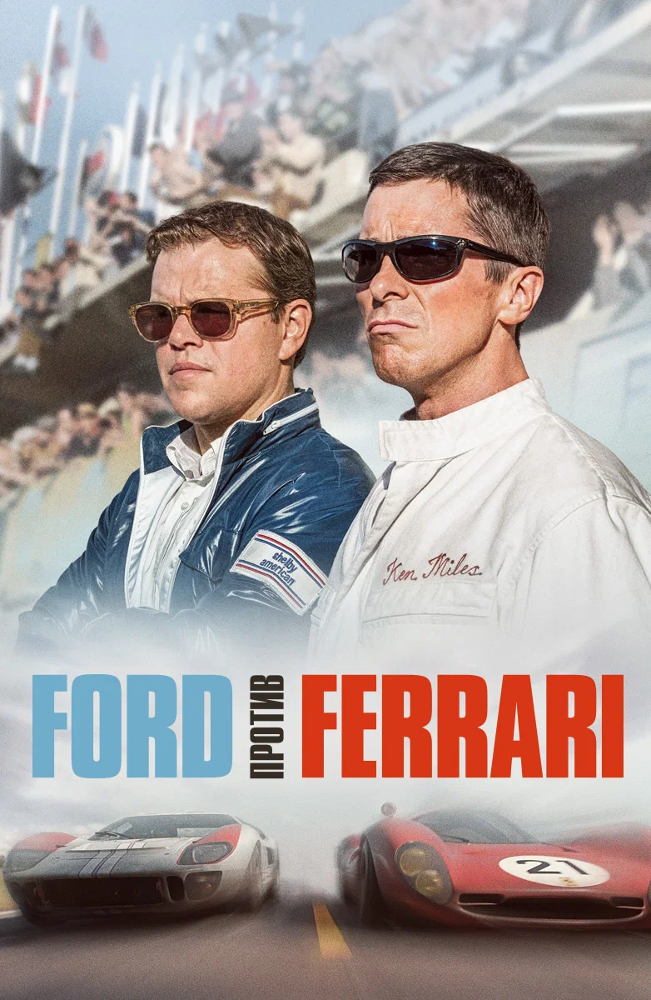
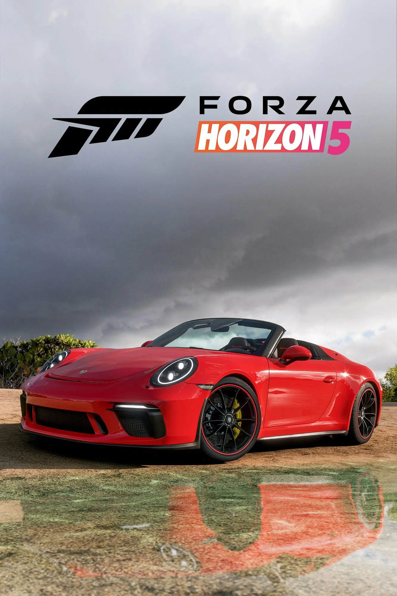
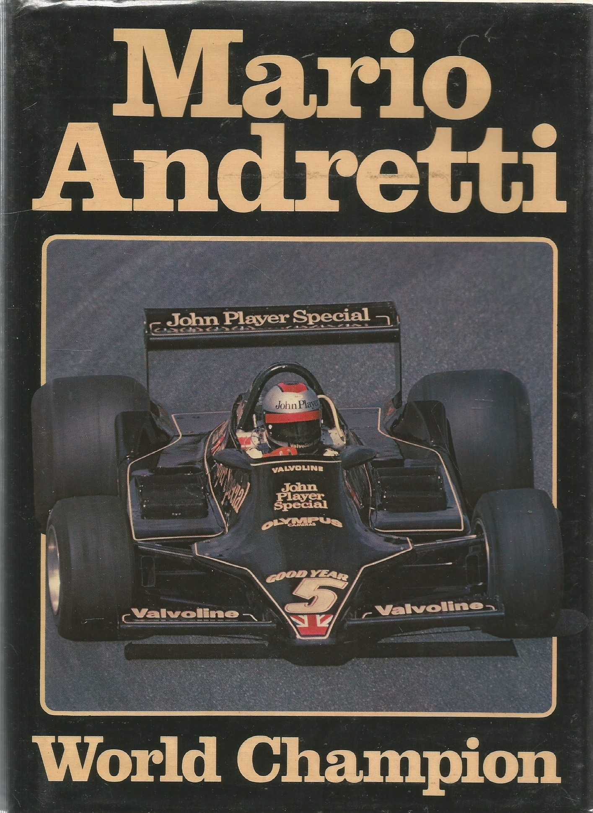

Фильм «Ford против Ferrari»
О чём: реальная история противостояния Ford и Ferrari в гонке «24 часа Ле-Мана» 1966 года.
Почему рекомендую: драйв, настоящие эмоции и потрясающие гоночные сцены. Кристиан Бэйл в главной роли — огонь.
Фильмы, игры и книги, которые должен посмотреть каждый автолюбитель.

О чём: реальная история противостояния Ford и Ferrari в гонке «24 часа Ле-Мана» 1966 года.
Почему рекомендую: драйв, настоящие эмоции и потрясающие гоночные сцены. Кристиан Бэйл в главной роли — огонь.

О чём: аркадные гонки в открытом мире Мексики с сотнями автомобилей.
Почему рекомендую: невероятная графика, свобода выбора и атмосфера настоящего автофестиваля.

О чём: автобиография профессионального гонщика, закулисье Формулы-1.
Почему рекомендую: честный взгляд на мир автоспорта без прикрас. Читается на одном дыхании.